Section 1
Mauris mauris ante, blandit et, ultrices a, suscipit eget, quam. Integer ut neque. Vivamus nisi metus, molestie vel, gravida in, condimentum sit amet, nunc. Nam a nibh. Donec suscipit eros. Nam mi. Proin viverra leo ut odio. Curabitur malesuada. Vestibulum a velit eu ante scelerisque vulputate.
1. 署內之專案計畫資料蒐集標準作業流程(SOP)已有修正，是指哪件事呢?
「環保專案計畫資料蒐集標準作業流程」於107年10月24日通過「環署資字第1070086381號函」修正。
「環保專案計畫資料蒐集標準作業流程（PDF檔）」
「環保專案計畫資料蒐集標準作業流程（PDF檔）」
2. 過去已經上傳至署內其他系統的歷史資料，是否需要重新上傳至這個RDSW？
署內若已有【資料庫】保存的歷史資料，不必重複上傳至RDSW。若原始數據已存在署內其它資料庫，專案承辦請於「原始數據共享倉儲系統」（RDSW）註明，填寫完畢後，將不會再收到系統發出的提醒信件。
- (1) 承辦人登入RDSW後，請專案承辦進入該專案，如下圖所示，點選紅框中的設定icon，將進入設定頁面：
- 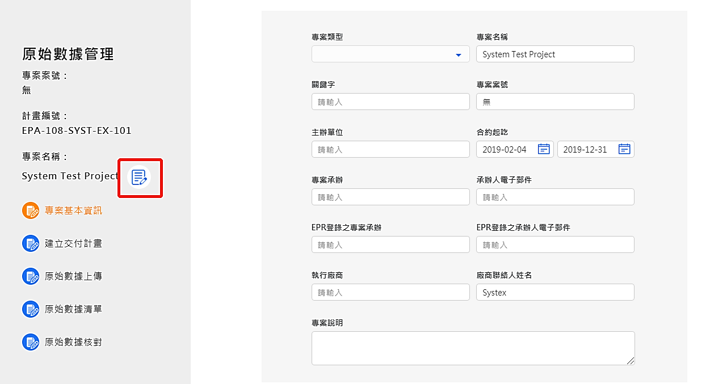
- (2) 請點選左方功能列中的專案資訊註記功能，將欄位【是否有原始數據】選取為【否】，再按下綠色【儲存】按鈕
- 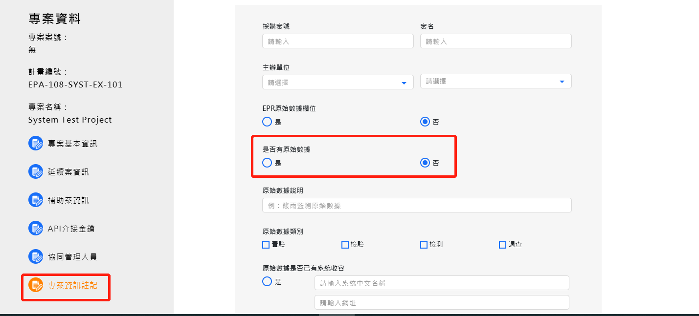
3. 署內已有CDX、EPR等系統保存資料，以後結案我是否都要上傳?
- (1) CDX：是。CDX 目的為資料交換，並非保存原始數據的資料庫；故仍必須將原始數據上傳至RDSW，以利珍貴數位資產能被永久妥善保存。
- (2) EPR：是。EPR 系統目的為保存結案報告資料PDF，並非保存原始數據的資料庫；故仍必須將原始數據上傳至RDSW，以利珍貴數位資產能被永久妥善保存。
參考使用情境：
- (1) 情境一：有原始數據且署內有資料庫收容，不需要資料交換→僅將結案報告PDF上傳至EPR即可。
- (2) 情境二：有原始數據且署內有資料庫收容，且需要資料交換→請將結案報告PDF上傳至EPR、將交換資料上傳CDX。
- (3) 情境三：有原始數據但署內無資料庫收容，且需要資料交換→請將結案報告PDF上傳至EPR、將交換資料上傳CDX、原始數據上傳至RDSW。
1. 各縣市環保局該如何登入?
請點選【縣市環保局】，輸入【EPR】環保專案成果報告資訊系統的帳號及密碼登入
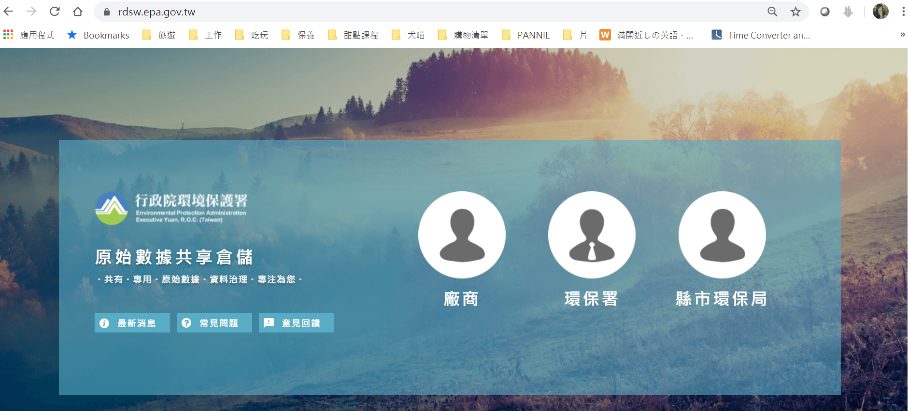
2. 過去已經上傳至署內其他系統的歷史資料，是否需要重新上傳至這個RDSW？
署內若已有【資料庫】保存的歷史資料，不必重複上傳至RDSW。若原始數據已存在署內其它資料庫，專案承辦請於「原始數據共享倉儲系統」（RDSW）註明，填寫完畢後，將不會再收到系統發出的提醒信件。
- (1) (1) 承辦人登入系統後，點選【專案資訊註記】功能，填寫專案資訊： 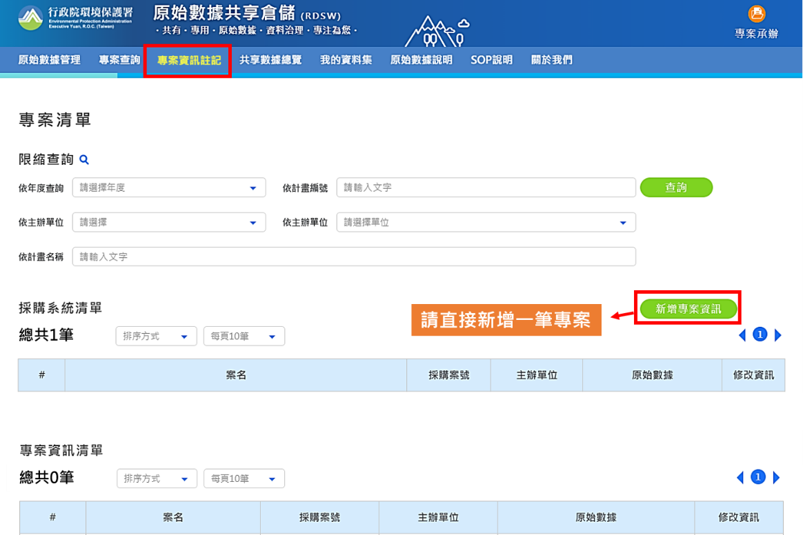
- (2) 請點選【新增專案資訊】，將會跳出以下畫面：
- 煩請填寫您的專案原始數據收容於署內哪個系統，樣本如下。確認內容無誤後， 點選【儲存】。
- 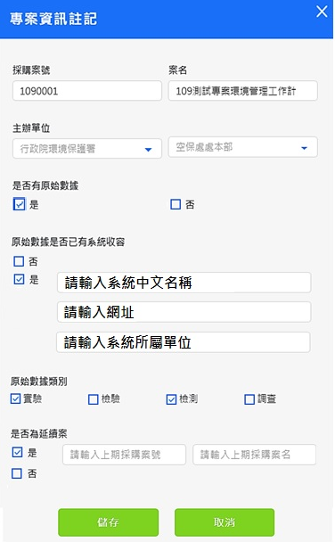
1. 環評(審查階段)書件原始數據上傳RDSW系統之時間點為何?
環保署於108年10月1日後發出的繳費通知函
(署內發文內容參考)
，均提醒開發單位完成原始數據上傳、 依程序審查意見補正、繳費後，再提送報告書至環保署審查，審查過程中因應審查意見所進行的補充調查， 亦須在定稿前完成數據更新。
2. 監督階段是否全部的環境監測報告均需上傳原始數據?
請依環保署 108年9月19日環署督字1080069564號函
(署內發文內容參考)
辦理，屬本署列管之環評審查通過開發計畫， 開發單位定期提送監測報告至本署時，請一併上傳原始數據至RDSW系統，但非屬本署列管之開發計畫，其開發單位亦可上傳原始數據。
3. 環評原始數據由誰上傳？
依環境影響評估法規定，環評書件是由開發單位提出，但開發單位可委請顧問公司或檢測機構上傳原始數據。
4. 同一組登錄碼可否由不同人使用、上傳原始數據？(譬如 A 同事上傳空氣、B 同事上傳水質、C 同事上傳噪音數據)
同一組登錄碼可多人共同使用，但建議負責上傳的人員，盡量申請自己專用的 E政府的帳號， 以確保萬一需要補正細節資料，退件時能讓該上傳人員直接收到。
5. 系統目前圖表功能僅開放給承辦使用，後續若開發單位已將數據全數上傳，是否也應該開放圖表功能給開發單位做利用？
系統已在11/1完成此功能開發，後續開發單位上傳數據後之次日起皆可使用圖表分析功能。
6. 目前系統內建12 類原始數據範本，未來會進行調整(如新增範本、欄位等)嗎？
目前原始數據交付類別僅限內建之12 類範本，後續範本將會依照使用者意見回饋來新增可能的欄位。
7. 是否環保署及環保局審查之環評案件，其原始數據均需上傳RDSW系統？
目前初步規劃僅納入環保署審查之環評案件，環保局案件納入與否後續將會評估。
8. 何種類型的環評書件需要上傳原始數據？未來是否納入環評相關法規修訂？
環評書件只要涉及原始數據皆需上傳至署保存(引用政府機關之資料、其他單位長期的專案累積資料及補充調查皆要上傳至系統)， 後續將納入修法考量。
9. 環境監測報告是否僅上傳下一季監測報告數據？或是全部的歷史監測資料都需要上傳？
前述開發單位於下一季（108年10月1日後）所提交之環境監測報告，其原始數據均需上傳RDSW系統， 但站在數據保存的立場，也鼓勵開發單位上傳歷史監測資料。
1. 如何確認廠商交付進度？
功能列點選【原始數據管理】，可以看到目前廠商交付專案之狀態，以下圖為例
【1個專案待核對】：有1個廠商提交1個專案，等待承辦人核對數據
【0個專案交付逾期】：0個專案超過履約30天，沒上傳原始數據
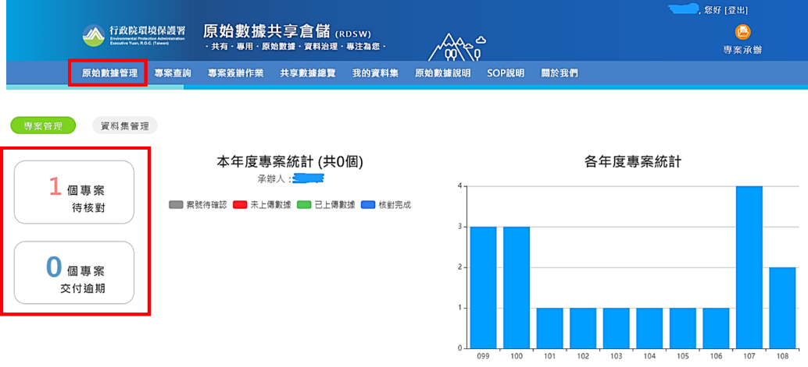
2. 如何確認收件？
- (1) 功能列點選【原始數據管理】，並點選【待核對專案】
- 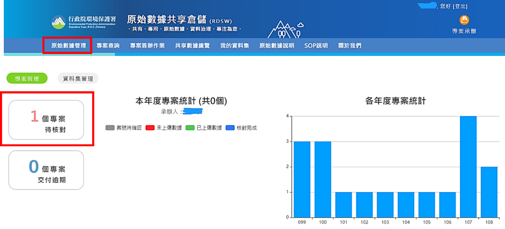
- (2) 點選專案，即可進入【專案清單】中觀看廠商上傳的資料集數據
- 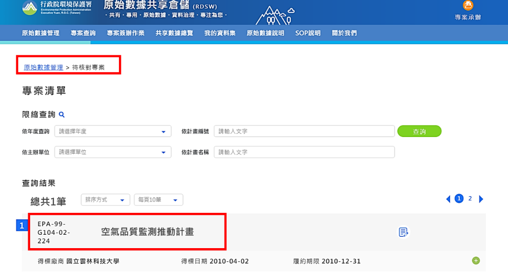
3. 如何退件給廠商？
- (1) 點選【待核對專案】
- (2) 進入專案清單中直接點選【退回】按鈕，即可退件給廠商
- 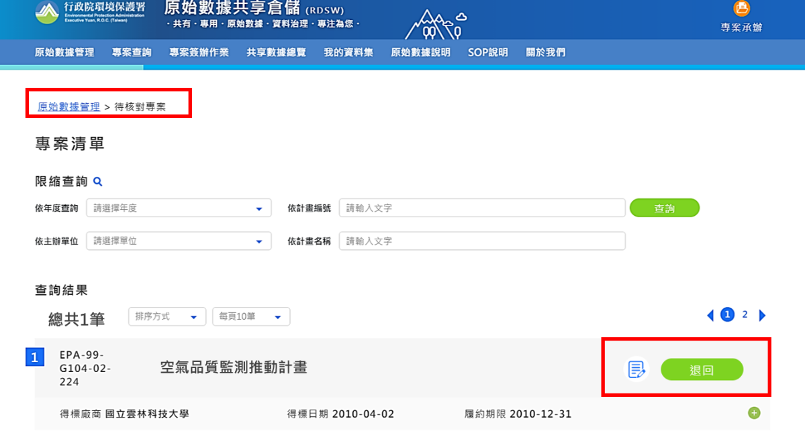
1. 請問 E 政府的帳號密碼是否可由不同人同時登入使用，上傳不同專案的原始數據嗎?
是的，可由不同人同時使用相同帳號登入使用。但建議：負責上傳的人員， 盡量申請自己專用的 E政府的帳號，以確保萬一需要補正細節資料，退件時能讓該上傳人員直接收到。
2. 廠商申請【我的E政府】帳號，應申請一般會員的還是公務帳號?
請廠商申請一般帳號，如下圖所示！
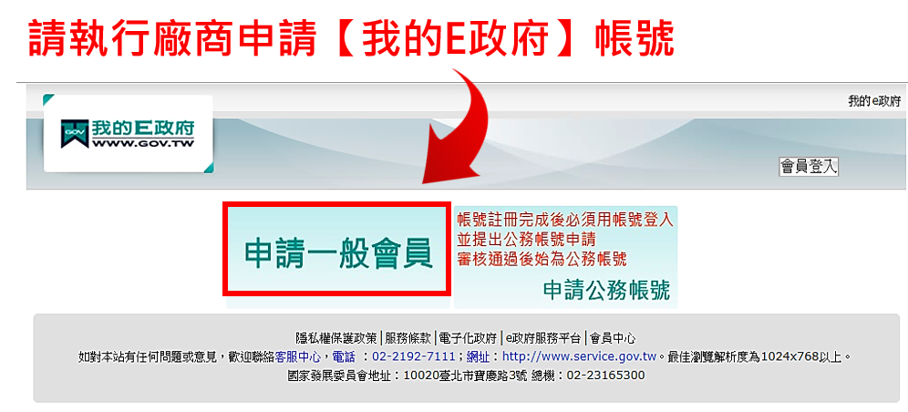
3. 縣市環保局人員如何登入系統?
請使用各單位於EPR成果報告系統內的帳號及密碼，即可登入本系統。
1. 12類原始數據範本下載
2. 若原始數據範本，我覺得不適用怎麼辦？
原始數據範本目前以系統上提供的12類為主，皆為EXCEL格式， 若使用者有需求可以自行於範本欄位後方新增欄位填寫； 若有其他意見回饋，也可來信至
erirdsw@gmail.com。
3. 如何將專案登錄碼匯進系統並下載12類原始數據範本?
請下載下方連結，將有完整操作步驟介紹。請依照範本格式填寫，若合併儲存格、在既有表格中插入新增欄位等等，將會導致系統無法判別而上傳失敗。
4. 填寫完系統提供的12類原始數據範本(excel檔)欄位內容，能直接上傳嗎?
上傳的Excel檔內必須包含詮釋資料及數據資料工作表，如下圖所示：
專案名稱：107-108年鹿林山與偏遠離島背景測站國際合作及操作維護專案研究計畫
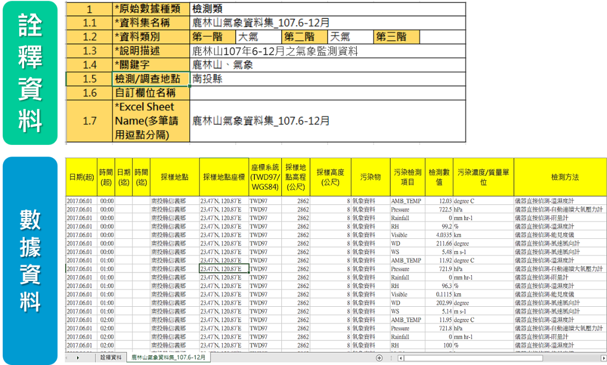
5. 什麼是【資料集】?
資料集即為12類範本EXCEL檔案內的一個【詮釋資料】加上一個【數據資料】
→一個專案內能含有多個資料集，可依照檢測的種類或檢測的時間命名。
→一個檔案內能含有多個數據資料SHEET。
- (1) 依照檢測種類命名，參考如下：
- 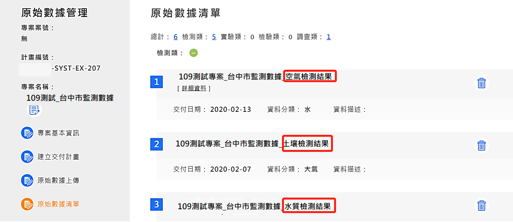 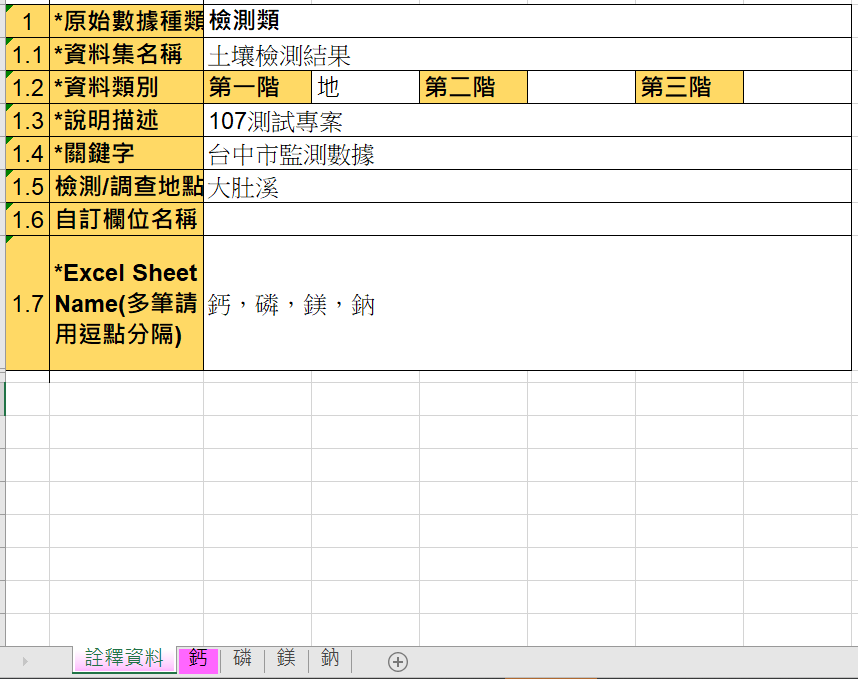
- (2) 依照檢測時間(如各季皆會檢測一次)命名，參考如下：
- 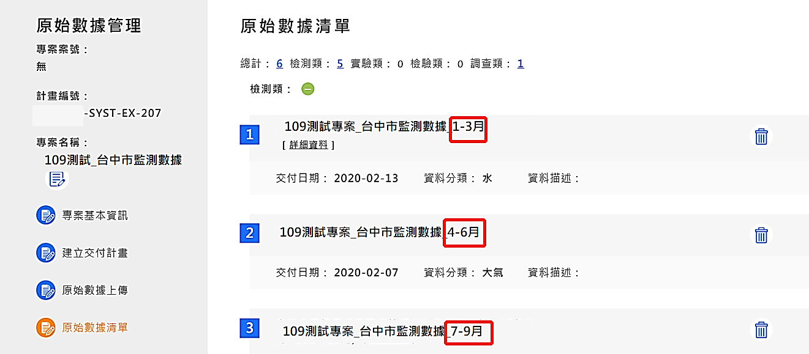 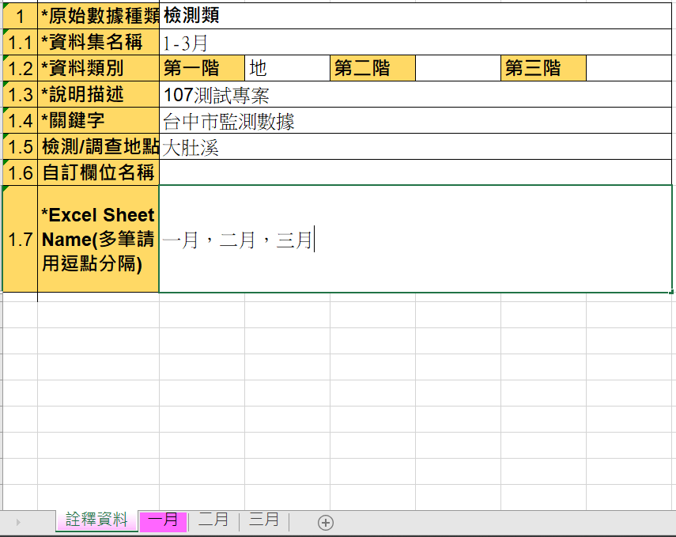
6. 詮釋資料如何填寫?
範例說明：
- (1) 系統下載12類範本中的【詮釋資料】sheet是必填，不可空白；沒有填寫將會導致上傳失敗。
- (2) 有標示【*】是必填欄位
- (3) 若有多個sheet，必須在1.7逐一填寫，並以逗號區隔之。逗號全形半形皆可，但此格的文字不能填寫頓號【、】，這將會導致上傳失敗。
7. 填寫範本時，若【檢測數值】欄位若為非數值，上傳後卻被系統檢測出欄位有空值，該如何填寫?
- (1) 請參考下方的例外值(ND, NA)填寫方式，若填寫ND，需填寫後方【偵測極限】欄位。
- 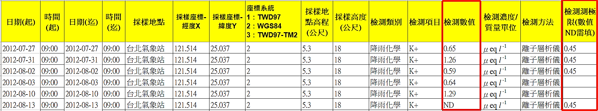
- (2) 如原先的紀錄方式本身即為非數值(如：＜10,＞10)，請依報告內容填寫即可。
8. 若監測時遇到沒有數值的情況，除原欄位內填 NA 之外，範本內是否提供欄位可註明原因?
目前範本最右邊有提供【自訂欄位】，填寫時可自行從最右邊起新增並命名、填入註解。
9. 目前範本內的經緯度欄位提供不同的格式填寫，系統是否無特別檢驗制度，經緯度欄位的填寫方式可以接受所有格式?
目前系統指定可讀取的座標格式為：TWD97、TWD97-TM2及 WGS84。
10. 範本內的檢測項目及檢測數值名稱需要依署內規定填寫嗎？
目前系統面針對檢測項目名稱暫時是沒有特別限制的，中英文皆可。 若資料格式檢驗所有公告的填寫方法，請照著填寫即可，因為未來應用數據時格式越統一， 分析也相較容易。
1. 上傳原始數據檔案後，系統出現「原始數據種類關聯的Excel Sheet不存在」怎麼辦？
| No | 驗證規則 | 註解 | 內容 | 錯誤位置 |
| 1 | 原始數據架構檢查 | 原始數據種類關聯的Excel Sheet不存在 | 河川水質108.11.1 | 第C欄，第10列 |
1. 欄位名稱對應問題：
上傳的原始數據所包含的【詮釋資料Excel Sheet Name】欄位文字與【數據資料工作表名稱】， 必須要一致。若不一致，系統將無法判別兩者為相對應資料。下方圖例，說明兩者名稱應一致。
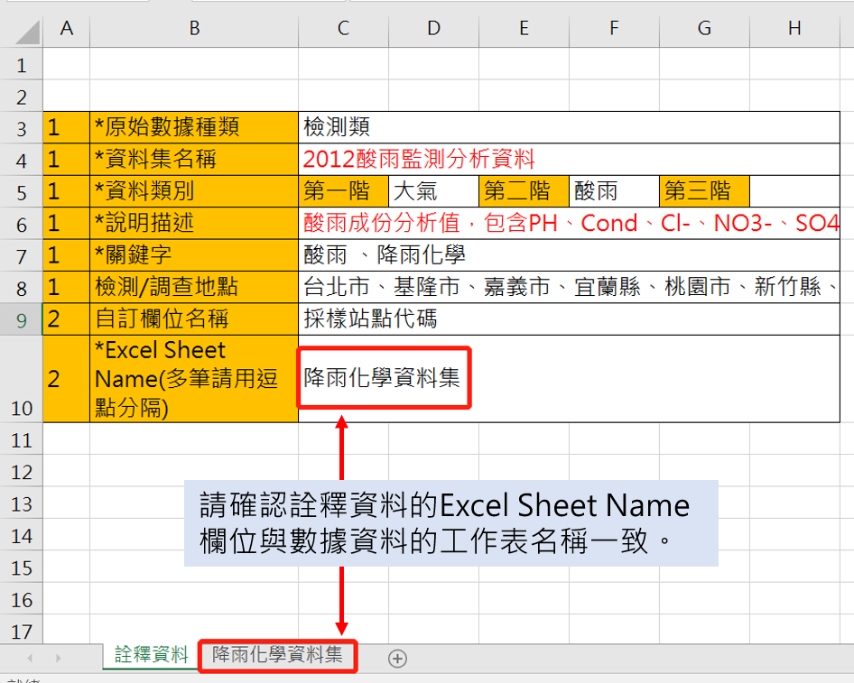
上傳的原始數據所包含的【詮釋資料Excel Sheet Name】欄位文字與【數據資料工作表名稱】， 必須要一致。若不一致，系統將無法判別兩者為相對應資料。下方圖例，說明兩者名稱應一致。
2. Sheet name必須無空隔：請確認數據資料的工作表名稱必須前後無空隔，否則將導致上傳失敗。
2. 上傳原始數據檔案後，系統出現「原始數據種類關聯的Excel Sheet欄位未填寫」怎麼辦？
| No | 驗證規則 | 註解 | 內容 | 錯誤位置 |
| 1 | 原始數據架構檢查 | 原始數據種類關聯的Excel Sheet欄位未填寫 | 空白 | 第C欄，第23列 |
上述表格中的問題為Excel 檔案裡面的Sheet Name未填寫，因此應補上Excel Sheet Name欄位內容，如下圖所示。
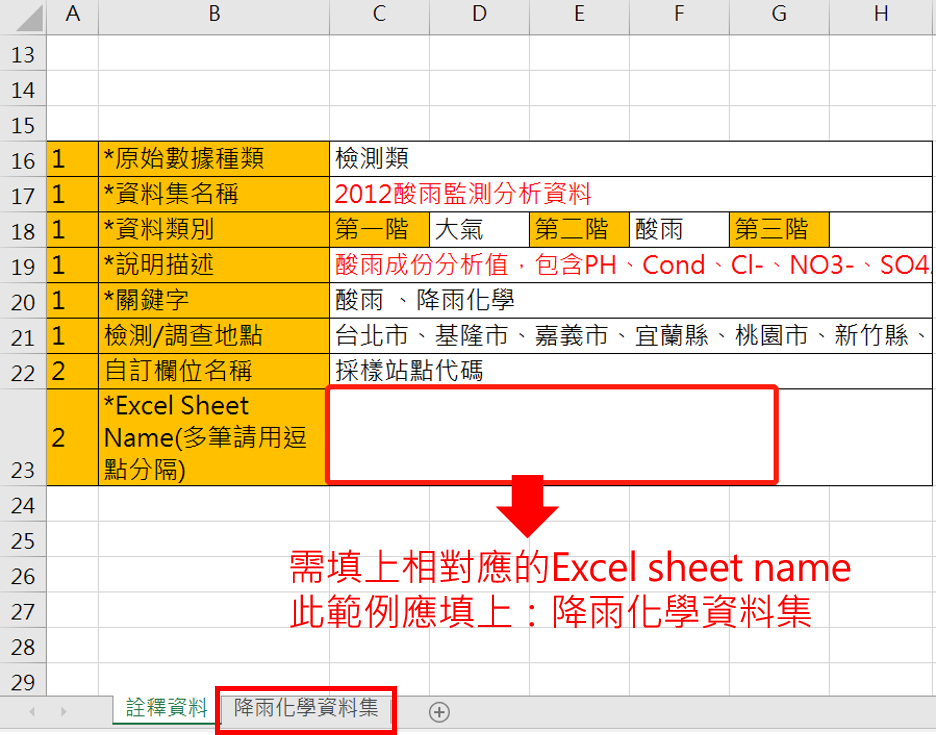
3. 上傳原始數據檔案後，系統出現「Sheet名稱: 詮釋資料不存在」怎麼辦？
| No | 驗證規則 | 註解 | 內容 | 錯誤位置 |
| 1 | 詮釋資料不存在 | Sheet名稱:〔詮釋資料不存在〕 | 不存在 |
此問題為資料集內的詮釋資料不存在，僅有數據資料，因此需補上詮釋資料工作表，即可成功匯入資料。
4. 上傳數據後，如何看到系統圖形？
進入專案點選【原始數據清單】→點選【詳細資料】，即可看到相關敘述性統計與多樣化圖表(折線圖, 箱型圖, 地圖等)，同時可透過圖表確認數據是否有異常的情形，進一步檢核上傳的數據品質。
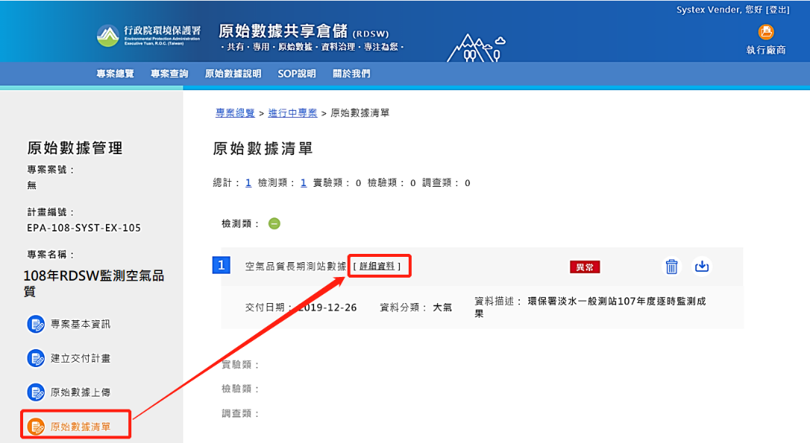
5. 如何確認已經完整上傳，完成工作進度？
請查看【專案總覽】頁面
- (1) 完成原始數據上傳：確認專案狀態將從待處理(下方左圖)→等待中(下方中圖)。表示：已完整上傳並等待專案承辦審核原始數據。
- (2) 承辦完成審核：確認專案狀態將從等待中(下方中圖)→已完成(下方右圖)。表示：專案已成功交付，且承辦人完成數據核對。
- 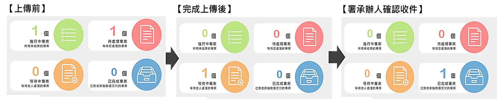
6. 如何將自己上傳的原始數據提交給承辦人審核？
- (1) 先確認【原始數據上傳】的步驟3頁面中，已按下【全數儲存】，將資料集儲存至原始數據清單。
- 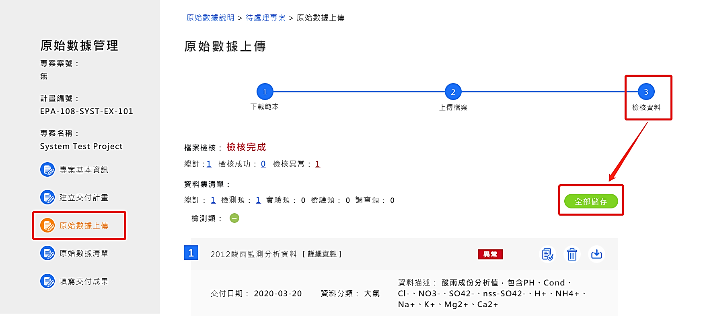
- (2) 確認圖形展示內容正確：
- 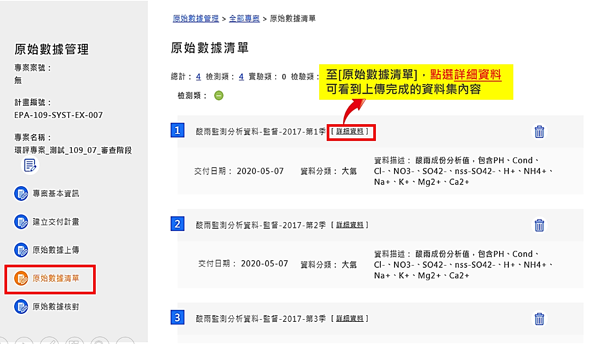 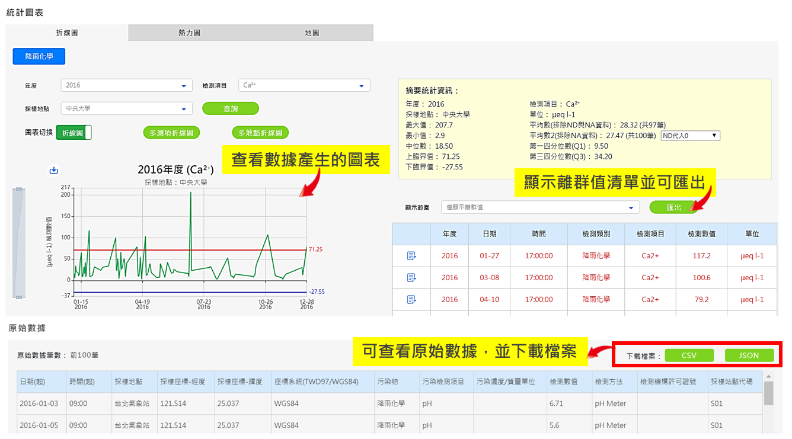
- (3) 在【原始數據清單】頁面中，點選【提交審核】
- 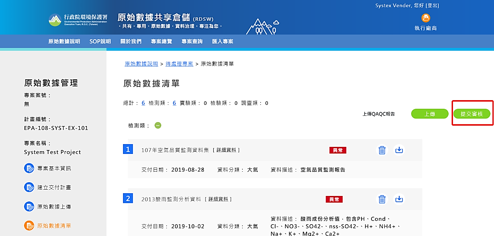
7. 如何上傳第二季的原始數據？
(施工中)
1. 沒有裝 MS office, 用 Open Office 也可以上傳嗎？
是的，目前原始數據上傳至系統所支援的格式為以下兩種
1. Microsoft： xls 及 xlsx
2. OpenOffice: ods
1. Microsoft： xls 及 xlsx
2. OpenOffice: ods
2. 原始數據範本檔案有大小限制嗎？
有，目前系統檔案最大限制為50MB！